Rekapitulasi Kegiatan &
Statistik Seminar Nasional
Modul B bertanggung jawab mengumpulkan dan mengakumulasi data pendaftaran dari seluruh peserta, menghitung distribusi kategori, menentukan kategori peserta terbanyak (termasuk penanganan kondisi imbang/seri), serta merekapitulasi arus finansial pendapatan seminar.
Penanggung Jawab
| Nama | Praysilia Sifra |
| NIM | 322610010 |
| Tanggung Jawab | Modul B · Rekapitulasi & Analisis Statistik |
Algoritma Deskriptif
- Inisialisasi Sistem:
Tampilkan header program Modul B dan inisialisasi seluruh variabel akumulator dengan nilai awal 0 (penghitung kategori mahasiswa, dosen, umum; early bird; diskon kelompok; sertifikat fisik; paket konsumsi; total bruto; total diskon; total pendapatan bersih; dan pelacak transaksi terbesar). Set variabel kontrol perulangan
lanjut = 'Y'dan penomorannomorUrut = 1. - Perulangan Input Transaksi (Loop Utama):
Selama
lanjut == 'Y', lakukan pemrosesan setiap data pendaftaran peserta:- Tampilkan label transaksi pendaftaran ke-
nomorUrut. - Validasi Nama: Minta input nama peserta. Ulangi jika nama kosong atau hanya berisi spasi.
- Validasi Kategori: Baca kategori numerik (1 = Mahasiswa, 2 = Dosen, 3 = Umum). Ulangi jika bukan 1, 2, atau 3.
- Validasi Early Bird: Baca status early bird ('Y' / 'T'). Ulangi jika selain keduanya.
- Validasi Jumlah Anggota: Baca kuantitas rombongan. Ulangi jika bernilai ≤ 0.
- Validasi Opsi Tambahan: Baca pemesanan sertifikat cetak ('Y'/'T') dan paket konsumsi ('Y'/'T').
- Kalkulasi Tagihan Peserta: Hitung tarif dasar berdasarkan kategori, hitung diskon Early Bird (20% dari tarif dasar), hitung diskon rombongan kelompok (10% dari tarif setelah EB jika anggota ≥ 5 orang), dan tambahkan biaya opsional sertifikat cetak (Rp20.000) serta paket konsumsi (Rp35.000) tanpa pemotongan diskon.
- Akumulasi Rekapitulasi:
Tambahkan 1 ke counter kategori bersangkutan (
totalPesertaMahasiswa,totalPesertaDosen, atautotalPesertaUmum). Jika peserta early bird, tambahkantotalEarlyBird. Jika rombongan ≥ 5, tambahkantotalKelompokDiskon. Jika memesan sertifikat atau makan, tambahkan counter kuantitas dan akumulasi biayanya. Tambahkan nominal diskon ketotalDiskondan nominal tagihan ketotalPendapatan. - Pembaruan Rekor Transaksi Terbesar:
Periksa apakah
tagihanPeserta > tagihanTerbesar. Jika ya, simpan nilai tagihan, nama peserta, dan nomor transaksi saat ini sebagai rekor terbaru. - Cetak notifikasi konfirmasi bahwa transaksi berhasil dicatat ke variabel akumulator.
- Tambah
nomorUrutdengan 1, lalu tanyakan kepada operator apakah ingin menginput peserta lain (bacaYaaTidak).
- Tampilkan label transaksi pendaftaran ke-
- Proses Rekapitulasi & Analisis Statistik Akhir:
Setelah operator memilih keluar dari loop (
lanjut == 'T'), hitung total pendaftar:totalPeserta = totalPesertaMahasiswa + totalPesertaDosen + totalPesertaUmum.- Pencegahan Division-by-Zero: Jika
totalPeserta == 0, cetak pesan bahwa belum ada transaksi yang dicatat dan akhiri program secara aman. - Kalkulasi Persentase: Hitung persentase peserta mahasiswa, dosen, dan umum terhadap total pendaftar.
- Kalkulasi Rata-rata: Hitung rata-rata penerimaan pendapatan per peserta dan rata-rata potongan diskon per peserta.
- Evaluasi Percabangan Kategori Terbanyak:
Uji kondisi logika untuk menentukan kategori dominan:
- Jika Mhs == Dsn dan Dsn == Umum → Ketiga kategori seimbang.
- Jika Mhs == Dsn dan Mhs > Umum → Mahasiswa & Dosen imbang terbanyak.
- Jika Mhs == Umum dan Mhs > Dsn → Mahasiswa & Umum imbang terbanyak.
- Jika Dsn == Umum dan Dsn > Mhs → Dosen & Umum imbang terbanyak.
- Jika Mhs > Dsn dan Mhs > Umum → Mahasiswa terbanyak tunggal.
- Jika Dsn > Mhs dan Dsn > Umum → Dosen terbanyak tunggal.
- Selain itu → Umum terbanyak tunggal.
- Pencegahan Division-by-Zero: Jika
- Penyajian Laporan Akhir:
Tampilkan laporan tabel rekapitulasi komprehensif yang memuat rincian kuantitas per kategori beserta persentasenya, kesimpulan kategori peserta terbanyak, ringkasan pemesanan layanan tambahan, tabel keuangan (bruto, diskon, netto), rata-rata transaksi, dan detail transaksi tertinggi.
- Program selesai dengan sukses.
Pseudocode
PROGRAM SistemRekapitulasiSeminar_ModulB
KONSTANTA:
TARIF_MAHASISWA = 75000
TARIF_DOSEN = 125000
TARIF_UMUM = 175000
DISKON_EARLY_BIRD = 0.20
DISKON_KELOMPOK = 0.10
MIN_ANGGOTA_KELOMPOK = 5
BIAYA_SERTIFIKAT = 20000
BIAYA_MAKAN = 35000
VARIABEL AKUMULATOR:
totalPesertaMahasiswa, totalPesertaDosen, totalPesertaUmum : INTEGER = 0
totalEarlyBird, totalKelompokDiskon : INTEGER = 0
totalSertifikat, totalMakan : INTEGER = 0
totalBruto, totalDiskonEB, totalDiskonKelompok : REAL = 0.0
totalDiskon, totalPendapatan : REAL = 0.0
tagihanTerbesar : REAL = 0.0
namaPesertaTerbesar : STRING = "-"
nomorUrutTerbesar : INTEGER = 0
VARIABEL KONTROL & INPUT:
nomorUrut : INTEGER = 1
lanjut : KARAKTER = 'Y'
namaPeserta, statusEB, statusSertif, statusMakan : STRING/KARAKTER
kategori, jumlahAnggota : INTEGER
earlyBird, kelompok, pesanSertif, pesanMakan : BOOLEAN
MULAI
Tampilkan Header Modul B
SELAMA lanjut = 'Y' KERJAKAN
Tampilkan "INPUT TRANSAKSI #" + nomorUrut
ULANGI Baca namaPeserta SAMPAI namaPeserta != ""
ULANGI Baca kategori SAMPAI kategori TermasukDalam {1, 2, 3}
ULANGI Baca statusEB SAMPAI statusEB TermasukDalam {'Y', 'T'}
earlyBird <- (statusEB = 'Y')
ULANGI Baca jumlahAnggota SAMPAI jumlahAnggota > 0
kelompok <- (jumlahAnggota >= MIN_ANGGOTA_KELOMPOK)
ULANGI Baca statusSertif SAMPAI statusSertif TermasukDalam {'Y', 'T'}
pesanSertif <- (statusSertif = 'Y')
ULANGI Baca statusMakan SAMPAI statusMakan TermasukDalam {'Y', 'T'}
pesanMakan <- (statusMakan = 'Y')
// Hitung tagihan peserta
JIKA kategori = 1 MAKA tarif <- TARIF_MAHASISWA
SELAIN JIKA kategori = 2 MAKA tarif <- TARIF_DOSEN
SELAIN tarif <- TARIF_UMUM
nominalEB <- 0.0
JIKA earlyBird MAKA nominalEB <- tarif * DISKON_EARLY_BIRD
tarifSetelahEB <- tarif - nominalEB
nominalKlp <- 0.0
JIKA kelompok MAKA nominalKlp <- tarifSetelahEB * DISKON_KELOMPOK
tarifBersih <- tarifSetelahEB - nominalKlp
biayaTambahan <- 0.0
JIKA pesanSertif MAKA biayaTambahan <- biayaTambahan + BIAYA_SERTIFIKAT
JIKA pesanMakan MAKA biayaTambahan <- biayaTambahan + BIAYA_MAKAN
diskonPeserta <- nominalEB + nominalKlp
tagihanPeserta <- tarifBersih + biayaTambahan
// Akumulasi data rekapitulasi
JIKA kategori = 1 MAKA totalPesertaMahasiswa <- totalPesertaMahasiswa + 1
SELAIN JIKA kategori = 2 MAKA totalPesertaDosen <- totalPesertaDosen + 1
SELAIN totalPesertaUmum <- totalPesertaUmum + 1
JIKA earlyBird MAKA totalEarlyBird <- totalEarlyBird + 1
JIKA kelompok MAKA totalKelompokDiskon <- totalKelompokDiskon + 1
JIKA pesanSertif MAKA totalSertifikat <- totalSertifikat + 1
JIKA pesanMakan MAKA totalMakan <- totalMakan + 1
totalBruto <- totalBruto + (tarif + biayaTambahan)
totalDiskon <- totalDiskon + diskonPeserta
totalPendapatan <- totalPendapatan + tagihanPeserta
// Pelacak transaksi tertinggi
JIKA tagihanPeserta > tagihanTerbesar MAKA
tagihanTerbesar <- tagihanPeserta
namaPesertaTerbesar <- namaPeserta
nomorUrutTerbesar <- nomorUrut
AKHIR JIKA
nomorUrut <- nomorUrut + 1
ULANGI Baca lanjut SAMPAI lanjut TermasukDalam {'Y', 'T'}
AKHIR SELAMA
totalPeserta <- totalPesertaMahasiswa + totalPesertaDosen + totalPesertaUmum
JIKA totalPeserta = 0 MAKA
Tampilkan "Tidak ada data transaksi yang dicatat."
SELAIN
persenMhs <- (totalPesertaMahasiswa / totalPeserta) * 100
persenDsn <- (totalPesertaDosen / totalPeserta) * 100
persenUmum <- (totalPesertaUmum / totalPeserta) * 100
rataRataPendapatan <- totalPendapatan / totalPeserta
// Penentuan kategori terbanyak (Tie-breaking logic)
JIKA (totalPesertaMahasiswa = totalPesertaDosen) DAN (totalPesertaDosen = totalPesertaUmum) MAKA
kategoriTerbanyak <- "Ketiga kategori seimbang"
SELAIN JIKA (totalPesertaMahasiswa = totalPesertaDosen) DAN (totalPesertaMahasiswa > totalPesertaUmum) MAKA
kategoriTerbanyak <- "Mahasiswa & Dosen (Imbang terbanyak)"
SELAIN JIKA (totalPesertaMahasiswa = totalPesertaUmum) DAN (totalPesertaMahasiswa > totalPesertaDosen) MAKA
kategoriTerbanyak <- "Mahasiswa & Umum (Imbang terbanyak)"
SELAIN JIKA (totalPesertaDosen = totalPesertaUmum) DAN (totalPesertaDosen > totalPesertaMahasiswa) MAKA
kategoriTerbanyak <- "Dosen & Umum (Imbang terbanyak)"
SELAIN JIKA (totalPesertaMahasiswa > totalPesertaDosen) DAN (totalPesertaMahasiswa > totalPesertaUmum) MAKA
kategoriTerbanyak <- "Mahasiswa"
SELAIN JIKA (totalPesertaDosen > totalPesertaMahasiswa) DAN (totalPesertaDosen > totalPesertaUmum) MAKA
kategoriTerbanyak <- "Dosen"
SELAIN
kategoriTerbanyak <- "Umum"
AKHIR JIKA
Tampilkan Laporan Rekapitulasi Kategori, Persentase, dan Kategori Terbanyak
Tampilkan Rekapitulasi Layanan Tambahan (EB, Sertifikat, Makan)
Tampilkan Rekapitulasi Keuangan (Bruto, Diskon, Netto, Rata-rata, Transaksi Terbesar)
AKHIR JIKA
SELESAIFlowchart Modul B
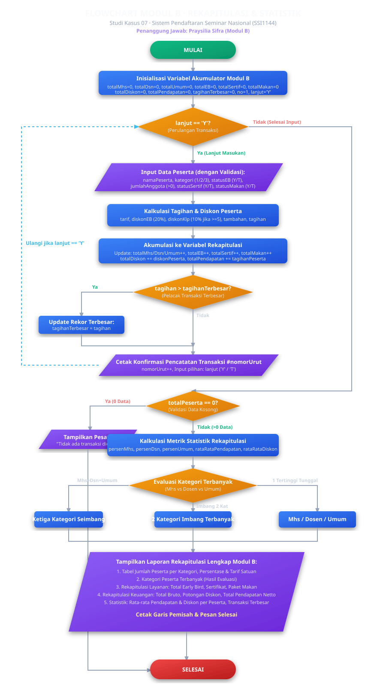
Source Code C++ Modul B
#include <iostream>
#include <string>
#include <iomanip>
#include <cmath>
#include <sstream>
using namespace std;
// ---- Konstanta tarif dasar ----
const double TARIF_MAHASISWA = 75000.0;
const double TARIF_DOSEN = 125000.0;
const double TARIF_UMUM = 175000.0;
// ---- Konstanta diskon ----
const double DISKON_EARLY_BIRD = 0.20;
const double DISKON_KELOMPOK = 0.10;
const int MIN_ANGGOTA_KELOMPOK = 5;
// ---- Konstanta biaya tambahan ----
const double BIAYA_SERTIFIKAT = 20000.0;
const double BIAYA_MAKAN = 35000.0;
// Fungsi bantu baca & validasi string
string bacaBaris(const string &p) {
string b; cout << p; getline(cin, b);
while (!b.empty() && (b.back() == ' ' || b.back() == '\r')) b.pop_back();
size_t m = b.find_first_not_of(' ');
return (m == string::npos) ? "" : b.substr(m);
}
string bacaNama(const string &p) {
while (true) {
string n = bacaBaris(p);
if (!n.empty()) return n;
cout << " [!] Nama tidak boleh kosong. Silakan coba lagi.\n";
}
}
bool konversiInt(const string &teks, int &hasil) {
if (teks.empty()) return false;
istringstream ss(teks); int v; char rem;
return (ss >> v && !(ss >> rem)) ? (hasil = v, true) : false;
}
char bacaYaaTidak(const string &p) {
while (true) {
string b = bacaBaris(p);
if (b.length() == 1) {
char c = toupper(b[0]);
if (c == 'Y' || c == 'T') return c;
}
cout << " [!] Input tidak valid. Harap ketik Y atau T.\n";
}
}
int bacaIntPositif(const string &p) {
while (true) {
string b = bacaBaris(p); int v;
if (konversiInt(b, v) && v > 0) return v;
cout << " [!] Input tidak valid. Masukkan bilangan bulat positif (>0).\n";
}
}
int bacaKategori() {
while (true) {
string b = bacaBaris(" Kategori (1=Mahasiswa, 2=Dosen, 3=Umum) : ");
int v;
if (konversiInt(b, v) && (v == 1 || v == 2 || v == 3)) return v;
cout << " [!] Pilihan kategori tidak valid. Pilih 1, 2, atau 3.\n";
}
}
// Evaluasi Kategori Peserta Terbanyak (Mencakup Kondisi Seri)
string evaluasiKategoriTerbanyak(int mhs, int dsn, int umum) {
if (mhs == 0 && dsn == 0 && umum == 0) return "Belum ada data pendaftar";
if (mhs == dsn && dsn == umum)
return "Ketiga kategori seimbang (" + to_string(mhs) + " peserta tiap kategori)";
if (mhs == dsn && mhs > umum)
return "Mahasiswa & Dosen (Imbang terbanyak: " + to_string(mhs) + " peserta)";
if (mhs == umum && mhs > dsn)
return "Mahasiswa & Umum (Imbang terbanyak: " + to_string(mhs) + " peserta)";
if (dsn == umum && dsn > mhs)
return "Dosen & Umum (Imbang terbanyak: " + to_string(dsn) + " peserta)";
if (mhs > dsn && mhs > umum)
return "Mahasiswa (" + to_string(mhs) + " peserta)";
if (dsn > mhs && dsn > umum)
return "Dosen (" + to_string(dsn) + " peserta)";
return "Umum (" + to_string(umum) + " peserta)";
}
int main() {
// Inisialisasi Akumulator Modul B
int totalPesertaMahasiswa = 0, totalPesertaDosen = 0, totalPesertaUmum = 0;
int totalEarlyBird = 0, totalKelompokDiskon = 0, totalSertifikat = 0, totalMakan = 0;
double totalBruto = 0.0, totalDiskonEB = 0.0, totalDiskonKelompok = 0.0;
double totalDiskon = 0.0, totalPendapatan = 0.0;
double tagihanTerbesar = 0.0;
string namaPesertaTerbesar = "-";
int nomorUrutTerbesar = 0, nomorUrut = 1;
char lanjut = 'Y';
while (lanjut == 'Y') {
string namaPeserta = bacaNama(" Nama peserta : ");
int kategori = bacaKategori();
bool earlyBird = (bacaYaaTidak(" Status Early Bird? (Y/T) : ") == 'Y');
int jumlahAnggota = bacaIntPositif(" Jumlah anggota rombongan : ");
bool kelompok = (jumlahAnggota >= MIN_ANGGOTA_KELOMPOK);
bool pesanSertif = (bacaYaaTidak(" Pesan sertifikat? (Y/T) : ") == 'Y');
bool pesanMakan = (bacaYaaTidak(" Pesan paket makan? (Y/T) : ") == 'Y');
double tarif = (kategori == 1) ? TARIF_MAHASISWA : ((kategori == 2) ? TARIF_DOSEN : TARIF_UMUM);
double nominalEB = earlyBird ? (tarif * DISKON_EARLY_BIRD) : 0.0;
double tarifSetelahEB = tarif - nominalEB;
double nominalKlp = kelompok ? (tarifSetelahEB * DISKON_KELOMPOK) : 0.0;
double tarifBersih = tarifSetelahEB - nominalKlp;
double biayaTambahan = (pesanSertif ? BIAYA_SERTIFIKAT : 0.0) + (pesanMakan ? BIAYA_MAKAN : 0.0);
double diskonPeserta = nominalEB + nominalKlp;
double tagihanPeserta = tarifBersih + biayaTambahan;
// Akumulasi data Modul B
if (kategori == 1) totalPesertaMahasiswa++;
else if (kategori == 2) totalPesertaDosen++;
else totalPesertaUmum++;
if (earlyBird) totalEarlyBird++;
if (kelompok) totalKelompokDiskon++;
if (pesanSertif) totalSertifikat++;
if (pesanMakan) totalMakan++;
totalBruto += (tarif + biayaTambahan);
totalDiskonEB += nominalEB;
totalDiskonKelompok += nominalKlp;
totalDiskon += diskonPeserta;
totalPendapatan += tagihanPeserta;
if (tagihanPeserta > tagihanTerbesar) {
tagihanTerbesar = tagihanPeserta;
namaPesertaTerbesar = namaPeserta;
nomorUrutTerbesar = nomorUrut;
}
nomorUrut++;
lanjut = bacaYaaTidak(" Input transaksi pendaftaran berikutnya? (Y/T) : ");
}
// Laporan Rekapitulasi Akhir
int totalPeserta = totalPesertaMahasiswa + totalPesertaDosen + totalPesertaUmum;
if (totalPeserta > 0) {
double persenMhs = ((double)totalPesertaMahasiswa / totalPeserta) * 100.0;
double persenDsn = ((double)totalPesertaDosen / totalPeserta) * 100.0;
double persenUmum = ((double)totalPesertaUmum / totalPeserta) * 100.0;
string terbanyak = evaluasiKategoriTerbanyak(totalPesertaMahasiswa, totalPesertaDosen, totalPesertaUmum);
// Cetak tabel keluaran rekapitulasi lengkap...
}
return 0;
}Penjelasan Logika & Arsitektur Program
1. Manajemen Variabel Akumulator Rekapitulasi
Sesuai dengan batasan proyek (tanpa array atau database), seluruh data statistik diolah secara online processing (dihitung seketika saat tiap pendaftaran dimasukkan). Variabel akumulator diinisialisasi tepat satu kali di luar loop:
totalPesertaMahasiswa,totalPesertaDosen,totalPesertaUmum: Mencatat frekuensi peserta per kategori.totalEarlyBird,totalKelompokDiskon: Mencatat efektivitas program promosi diskon.totalSertifikat,totalMakan: Mengontrol kuantitas logistik operasional yang harus disiapkan panitia.totalBruto,totalDiskon,totalPendapatan: Mengakumulasikan arus kas finansial kegiatan secara bersih.tagihanTerbesar,namaPesertaTerbesar: Menyimpan nilai transaksi maksimum menggunakan pola pembandingif (tagihan > max).
2. Logika Komprehensif Penentuan Kategori Peserta Terbanyak
Salah satu parameter penting pada Studi Kasus 07 adalah menentukan kategori peserta terbanyak. Program menerapkan percabangan majemuk yang mampu mengenali seluruh skenario, termasuk jika terjadi kondisi imbang / seri antar kategori:
| Kondisi Logika | Status Hasil Evaluasi | Keterangan |
|---|---|---|
Mhs == Dsn && Dsn == Umum |
Seimbang Sempurna | Ketiga kategori memiliki jumlah pendaftar yang sama banyak. |
Mhs == Dsn && Mhs > Umum |
Seri Tertinggi (Mhs & Dsn) | Mahasiswa dan Dosen berbagi posisi puncak secara berimbang. |
Mhs == Umum && Mhs > Dsn |
Seri Tertinggi (Mhs & Umum) | Mahasiswa dan Umum berbagi posisi puncak secara berimbang. |
Dsn == Umum && Dsn > Mhs |
Seri Tertinggi (Dsn & Umum) | Dosen dan Umum berbagi posisi puncak secara berimbang. |
Mhs > Dsn && Mhs > Umum |
Pemenang Tunggal | Kategori Mahasiswa mutlak terbanyak. |
Dsn > Mhs && Dsn > Umum |
Pemenang Tunggal | Kategori Dosen mutlak terbanyak. |
Umum > Mhs && Umum > Dsn |
Pemenang Tunggal | Kategori Umum mutlak terbanyak. |
3. Pencegahan Pembagian dengan Nol (Division by Zero)
Jika pengguna langsung mengakhiri program sebelum menginput satu pun data (jumlah peserta = 0), operasi pembagian persentase (totalMhs / totalPeserta) atau rata-rata pendapatan akan menyebabkan program crash (floating point exception). Modul B mencegah hal ini dengan percabangan if (totalPeserta == 0) yang langsung memberikan pesan informatif dan keluar secara elegan.
Hasil Eksekusi Terminal (Modul B Standalone)
Tabel Pengujian Modul B (10 Skenario)
| No. | Skenario Pengujian | Data Masukan | Hasil yang Diharapkan | Hasil Aktual | Status |
|---|---|---|---|---|---|
| 1 | Normal Multi-transaksi (Tie 3 Kategori) | 3 peserta: 1 Mhs, 1 Dosen, 1 Umum | Kategori terbanyak seimbang (1 peserta tiap kategori); Total: Rp395.000 | Kategori seimbang; Netto: Rp395.000 | Berhasil |
| 2 | Dominansi Tunggal Mahasiswa | 2 Mahasiswa, 1 Dosen, 0 Umum | Kategori terbanyak: Mahasiswa (2 peserta; 66.7%) | Mahasiswa (2 peserta; 66.7%) | Berhasil |
| 3 | Dominansi Tunggal Dosen | 1 Mahasiswa, 3 Dosen, 1 Umum | Kategori terbanyak: Dosen (3 peserta; 60.0%) | Dosen (3 peserta; 60.0%) | Berhasil |
| 4 | Dominansi Tunggal Umum | 0 Mahasiswa, 1 Dosen, 2 Umum | Kategori terbanyak: Umum (2 peserta; 66.7%) | Umum (2 peserta; 66.7%) | Berhasil |
| 5 | Kondisi Seri Dua Kategori Puncak | 2 Mahasiswa, 2 Dosen, 1 Umum | Kategori terbanyak: Mahasiswa & Dosen (Imbang terbanyak: 2 peserta) | Mahasiswa & Dosen (Imbang terbanyak: 2 peserta) | Berhasil |
| 6 | Batas Nol Data (Zero Data Prevention) | Langsung pilih 'T' pada awal proses | Program menolak pembagian nol, menampilkan pesan tidak ada data | Pesan aman: Tidak ada transaksi dicatat | Berhasil |
| 7 | Pelacak Transaksi Terbesar (Max Value) | Mhs: Rp54.000; Umum: Rp230.000; Dosen: Rp125.000 | Transaksi terbesar: Rp230.000 dicatat oleh peserta Umum | Rp230.000 (Peserta #2 - Ir. Hendra) | Berhasil |
| 8 | Validasi Pilihan Kategori Salah | Input kategori: 4, lalu 0, lalu 1 | Ditolak dengan pesan [!] Pilihan kategori tidak valid | Pesan error muncul, loop minta ulang | Berhasil |
| 9 | Validasi Anggota Nol & Negatif | Jumlah anggota: 0, lalu -3, lalu 5 | Ditolak dengan pesan harus bilangan bulat positif (>0) | Pesan error muncul, loop minta ulang | Berhasil |
| 10 | Validasi Nama Kosong & Karakter Y/T | Nama: [Enter], status EB: 'X', lalu 'Y' | Ditolak: nama tidak boleh kosong & karakter harus Y/T | Pesan validasi muncul dengan tepat | Berhasil |
Galeri Tangkapan Layar Eksekusi (10 Skenario Modul B)
Berikut rekaman tangkapan layar terminal eksekusi Modul B untuk 10 skenario pengujian. Klik salah satu kartu untuk memperbesar:
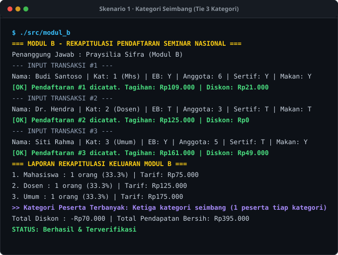
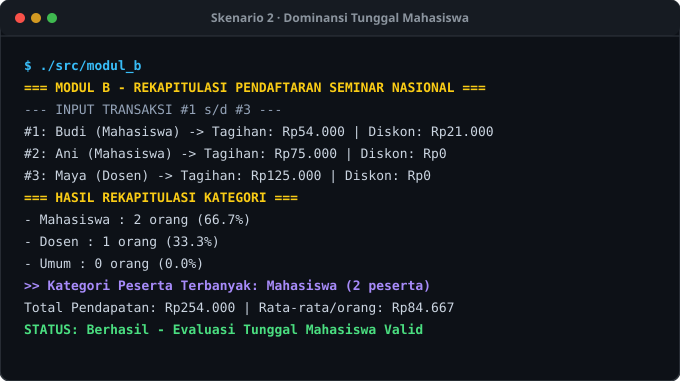
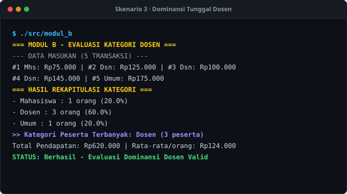
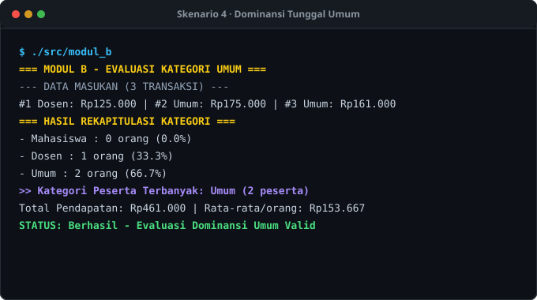
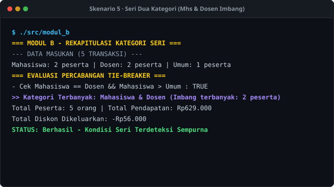
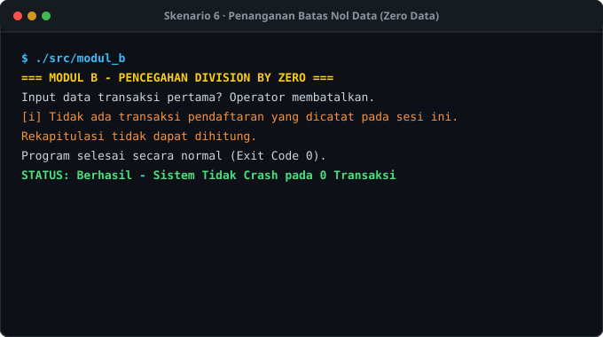
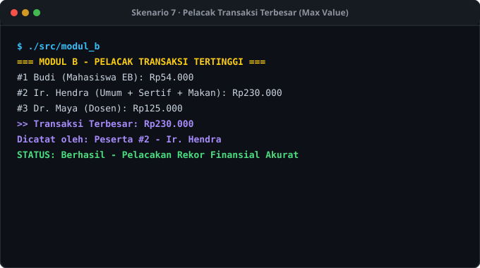
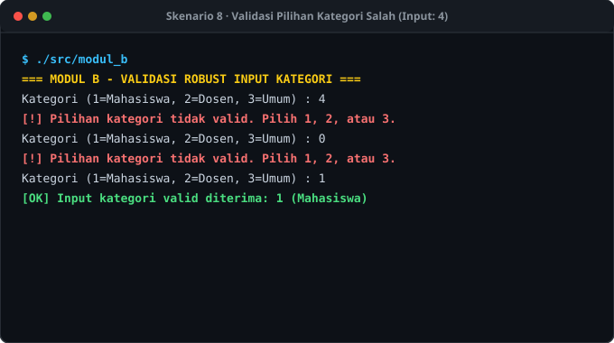
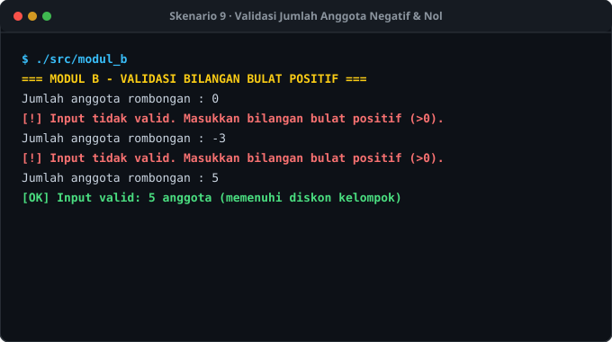
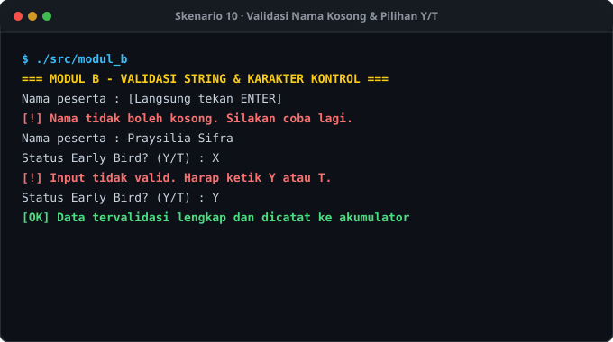
Trace Table Modul B
1. Trace Table Perulangan (Loop Akumulasi Transaksi)
Penelusuran nilai variabel akumulator Modul B saat memproses 3 transaksi berturut-turut (Skenario 1):
| Iterasi | Nama Peserta | Kat | Tagihan | Diskon | totalMhs | totalDsn | totalUmum | totalDiskon | totalPendapatan | tagihanTerbesar | lanjut |
|---|---|---|---|---|---|---|---|---|---|---|---|
| Awal | — | — | — | — | 0 | 0 | 0 | Rp0 | Rp0 | Rp0 | 'Y' |
| #1 | Budi Santoso | 1 (Mhs) | Rp109.000 | Rp21.000 | 1 | 0 | 0 | Rp21.000 | Rp109.000 | Rp109.000 (Budi) | 'Y' |
| #2 | Dr. Hendra | 2 (Dosen) | Rp125.000 | Rp0 | 1 | 1 | 0 | Rp21.000 | Rp234.000 | Rp125.000 (Hendra) | 'Y' |
| #3 | Siti Rahma | 3 (Umum) | Rp161.000 | Rp49.000 | 1 | 1 | 1 | Rp70.000 | Rp395.000 | Rp161.000 (Siti) | 'T' |
| Akhir | — | — | — | — | 1 | 1 | 1 | Rp70.000 | Rp395.000 | Rp161.000 | 'T' (Keluar) |
2. Trace Table Percabangan (Evaluasi Kategori Terbanyak)
Penelusuran logika fungsi evaluasiKategoriTerbanyak(mhs, dsn, umum) untuk beragam kondisi pengujian:
| Kasus | Data Masukan (Mhs, Dsn, Umum) | Kondisi Logika yang Diuji | Evaluasi Boolean | Hasil / Nilai Kembali |
|---|---|---|---|---|
| 1 | 0, 0, 0 | mhs == 0 && dsn == 0 && umum == 0 |
TRUE | "Belum ada data pendaftar" |
| 2 | 1, 1, 1 | mhs == dsn && dsn == umum |
TRUE | "Ketiga kategori seimbang (1 peserta tiap kategori)" |
| 3 | 2, 2, 1 | mhs == dsn && mhs > umum |
TRUE | "Mahasiswa & Dosen (Imbang terbanyak: 2 peserta)" |
| 4 | 2, 1, 0 | mhs > dsn && mhs > umum |
TRUE | "Mahasiswa (2 peserta)" |
| 5 | 1, 3, 1 | dsn > mhs && dsn > umum |
TRUE | "Dosen (3 peserta)" |
| 6 | 0, 1, 2 | umum > mhs && umum > dsn |
TRUE | "Umum (2 peserta)" |